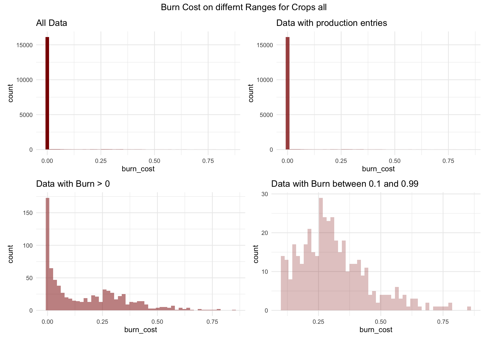

Geographic Aggregation
We explore how geographic aggregation — from municipality to district to country level — affects the shape of the burn cost distribution. This helps us understand the source of small non-zero values.
To better understand why there are so many data points close to zero but not exactly zero, we analyze how the data behaves when aggregated at different geographic levels.
Aggregated to District Level
We recreate the earlier range plots, but now aggregate the data to the district level. That is, we have one entry per district–year–crop combination.

Aggregated to Country Level
We further aggregate the data to the country level, producing just one entry for each year and crop.
Aggregation Effect
The following plots compare the distribution of positive burn values across three levels of geographic aggregation:
- Municipality level (blue)
- District level (green, for a high-damage crop)
- Country level (red, for one specific year)
This helps us visualize what happens to the distribution — especially the small-damage region — as we aggregate more.
Reasoning
In some way, it doesn’t make sense to have claims smaller than 1% — no farmer would bother claiming that. The likely explanation is aggregation dilution: when a single event affects a small part of a large area, the burn cost gets spread thinly over the full insured area. As we move from municipality to district to country, this effect should become more visible. The charts above suggest this pattern — especially for all crops combined — but it’s not entirely conclusive. We will test this hypothesis further in the next section.